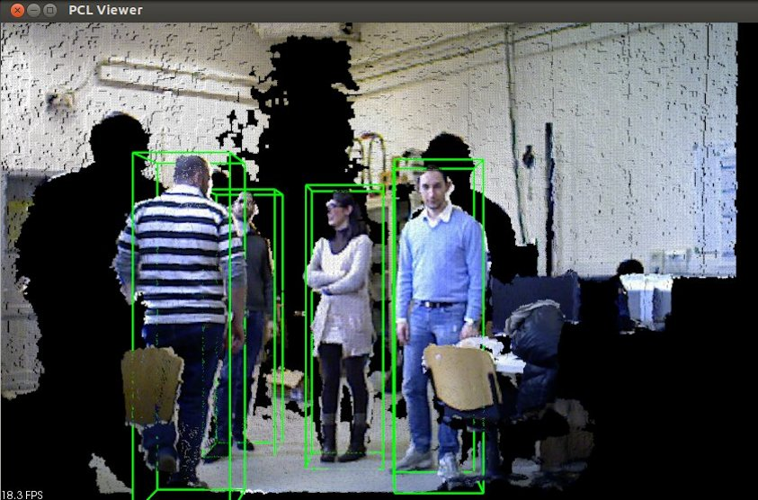
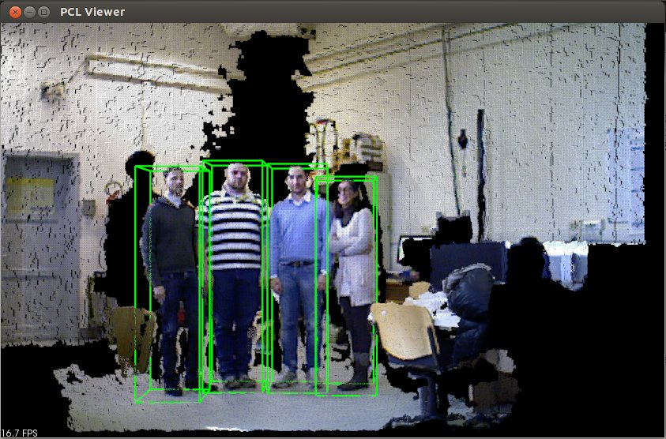
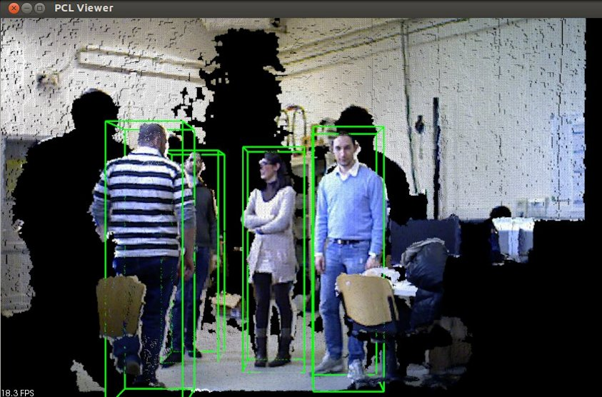
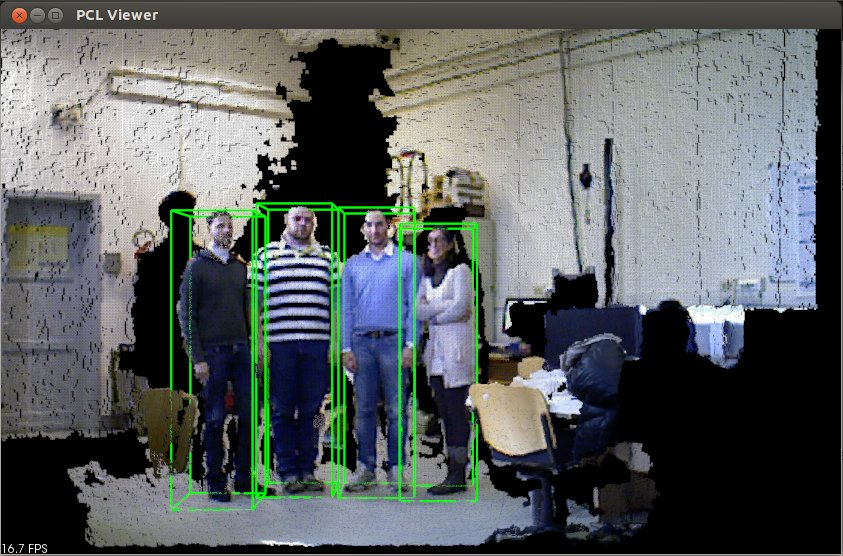

Detecting people on a ground plane with RGB-D data
This tutorial aims at explaining how to detect people from RGB-D data with the pcl_people module. With the proposed method, people standing/walking on a planar ground plane can be detected in real time with standard CPU computation. This implementation corresponds to the people detection algorithm for RGB-D data presented in
M. Munaro and E. Menegatti. “Fast RGB-D people tracking for service robots”. In Autonomous Robots, Volume 37 Issue 3, pp. 227-242, Springer, 2014.
M. Munaro, F. Basso and E. Menegatti. “Tracking people within groups with RGB-D data”. In Proceedings of the International Conference on Intelligent Robots and Systems (IROS) 2012, Vilamoura (Portugal), 2012.
The code
You can download the source code for this tutorial from here,
while the file containing the needed SVM parameters can be found here.
We implemented a people detection demo from a live RGB-D stream obtained with an OpenNI-compatible sensor (Microsoft Kinect, Asus Xtion, etc.).
Here it is the code:
#include <pcl/console/parse.h>
#include <pcl/point_types.h>
#include <pcl/visualization/pcl_visualizer.h>
#include <pcl/io/openni_grabber.h>
#include <pcl/sample_consensus/sac_model_plane.h>
#include <pcl/people/ground_based_people_detection_app.h>
#include <pcl/common/time.h>
#include <mutex>
#include <thread>
using namespace std::chrono_literals;
typedef pcl::PointXYZRGBA PointT;
typedef pcl::PointCloud<PointT> PointCloudT;
// PCL viewer //
pcl::visualization::PCLVisualizer viewer("PCL Viewer");
// Mutex: //
std::mutex cloud_mutex;
enum { COLS = 640, ROWS = 480 };
int print_help()
{
std::cout << "*******************************************************" << std::endl;
std::cout << "Ground based people detection app options:" << std::endl;
std::cout << " --help <show_this_help>" << std::endl;
std::cout << " --svm <path_to_svm_file>" << std::endl;
std::cout << " --conf <minimum_HOG_confidence (default = -1.5)>" << std::endl;
std::cout << " --min_h <minimum_person_height (default = 1.3)>" << std::endl;
std::cout << " --max_h <maximum_person_height (default = 2.3)>" << std::endl;
std::cout << "*******************************************************" << std::endl;
return 0;
}
void cloud_cb_ (const PointCloudT::ConstPtr &callback_cloud, PointCloudT::Ptr& cloud,
bool* new_cloud_available_flag)
{
cloud_mutex.lock (); // for not overwriting the point cloud from another thread
*cloud = *callback_cloud;
*new_cloud_available_flag = true;
cloud_mutex.unlock ();
}
struct callback_args{
// structure used to pass arguments to the callback function
PointCloudT::Ptr clicked_points_3d;
pcl::visualization::PCLVisualizer::Ptr viewerPtr;
};
void
pp_callback (const pcl::visualization::PointPickingEvent& event, void* args)
{
struct callback_args* data = (struct callback_args *)args;
if (event.getPointIndex () == -1)
return;
PointT current_point;
event.getPoint(current_point.x, current_point.y, current_point.z);
data->clicked_points_3d->points.push_back(current_point);
// Draw clicked points in red:
pcl::visualization::PointCloudColorHandlerCustom<PointT> red (data->clicked_points_3d, 255, 0, 0);
data->viewerPtr->removePointCloud("clicked_points");
data->viewerPtr->addPointCloud(data->clicked_points_3d, red, "clicked_points");
data->viewerPtr->setPointCloudRenderingProperties(pcl::visualization::PCL_VISUALIZER_POINT_SIZE, 10, "clicked_points");
std::cout << current_point.x << " " << current_point.y << " " << current_point.z << std::endl;
}
int main (int argc, char** argv)
{
if(pcl::console::find_switch (argc, argv, "--help") || pcl::console::find_switch (argc, argv, "-h"))
return print_help();
// Algorithm parameters:
std::string svm_filename = "../../people/data/trainedLinearSVMForPeopleDetectionWithHOG.yaml";
float min_confidence = -1.5;
float min_height = 1.3;
float max_height = 2.3;
float voxel_size = 0.06;
Eigen::Matrix3f rgb_intrinsics_matrix;
rgb_intrinsics_matrix << 525, 0.0, 319.5, 0.0, 525, 239.5, 0.0, 0.0, 1.0; // Kinect RGB camera intrinsics
// Read if some parameters are passed from command line:
pcl::console::parse_argument (argc, argv, "--svm", svm_filename);
pcl::console::parse_argument (argc, argv, "--conf", min_confidence);
pcl::console::parse_argument (argc, argv, "--min_h", min_height);
pcl::console::parse_argument (argc, argv, "--max_h", max_height);
// Read Kinect live stream:
PointCloudT::Ptr cloud (new PointCloudT);
bool new_cloud_available_flag = false;
pcl::Grabber* interface = new pcl::OpenNIGrabber();
std::function<void (const pcl::PointCloud<pcl::PointXYZRGBA>::ConstPtr&)> f =
[&] (const pcl::PointCloud<pcl::PointXYZRGBA>::ConstPtr& callback_cloud) { cloud_cb_ (callback_cloud, cloud, &new_cloud_available_flag); };
interface->registerCallback (f);
interface->start ();
// Wait for the first frame:
while(!new_cloud_available_flag)
std::this_thread::sleep_for(1ms);
new_cloud_available_flag = false;
cloud_mutex.lock (); // for not overwriting the point cloud
// Display pointcloud:
pcl::visualization::PointCloudColorHandlerRGBField<PointT> rgb(cloud);
viewer.addPointCloud<PointT> (cloud, rgb, "input_cloud");
viewer.setCameraPosition(0,0,-2,0,-1,0,0);
// Add point picking callback to viewer:
struct callback_args cb_args;
PointCloudT::Ptr clicked_points_3d (new PointCloudT);
cb_args.clicked_points_3d = clicked_points_3d;
cb_args.viewerPtr = pcl::visualization::PCLVisualizer::Ptr(&viewer);
viewer.registerPointPickingCallback (pp_callback, (void*)&cb_args);
std::cout << "Shift+click on three floor points, then press 'Q'..." << std::endl;
// Spin until 'Q' is pressed:
viewer.spin();
std::cout << "done." << std::endl;
cloud_mutex.unlock ();
// Ground plane estimation:
Eigen::VectorXf ground_coeffs;
ground_coeffs.resize(4);
std::vector<int> clicked_points_indices;
for (unsigned int i = 0; i < clicked_points_3d->size(); i++)
clicked_points_indices.push_back(i);
pcl::SampleConsensusModelPlane<PointT> model_plane(clicked_points_3d);
model_plane.computeModelCoefficients(clicked_points_indices,ground_coeffs);
std::cout << "Ground plane: " << ground_coeffs(0) << " " << ground_coeffs(1) << " " << ground_coeffs(2) << " " << ground_coeffs(3) << std::endl;
// Initialize new viewer:
pcl::visualization::PCLVisualizer viewer("PCL Viewer"); // viewer initialization
viewer.setCameraPosition(0,0,-2,0,-1,0,0);
// Create classifier for people detection:
pcl::people::PersonClassifier<pcl::RGB> person_classifier;
person_classifier.loadSVMFromFile(svm_filename); // load trained SVM
// People detection app initialization:
pcl::people::GroundBasedPeopleDetectionApp<PointT> people_detector; // people detection object
people_detector.setVoxelSize(voxel_size); // set the voxel size
people_detector.setIntrinsics(rgb_intrinsics_matrix); // set RGB camera intrinsic parameters
people_detector.setClassifier(person_classifier); // set person classifier
people_detector.setPersonClusterLimits(min_height, max_height, 0.1, 8.0); // set person classifier
// people_detector.setSensorPortraitOrientation(true); // set sensor orientation to vertical
// For timing:
static unsigned count = 0;
static double last = pcl::getTime ();
// Main loop:
while (!viewer.wasStopped())
{
if (new_cloud_available_flag && cloud_mutex.try_lock ()) // if a new cloud is available
{
new_cloud_available_flag = false;
// Perform people detection on the new cloud:
std::vector<pcl::people::PersonCluster<PointT> > clusters; // vector containing persons clusters
people_detector.setInputCloud(cloud);
people_detector.setGround(ground_coeffs); // set floor coefficients
people_detector.compute(clusters); // perform people detection
ground_coeffs = people_detector.getGround(); // get updated floor coefficients
// Draw cloud and people bounding boxes in the viewer:
viewer.removeAllPointClouds();
viewer.removeAllShapes();
pcl::visualization::PointCloudColorHandlerRGBField<PointT> rgb(cloud);
viewer.addPointCloud<PointT> (cloud, rgb, "input_cloud");
unsigned int k = 0;
for(auto& cluster : clusters)
{
if(cluster.getPersonConfidence() > min_confidence) // draw only people with confidence above a threshold
{
// draw theoretical person bounding box in the PCL viewer:
cluster.drawTBoundingBox(viewer, k);
++k;
}
}
std::cout << k << " people found" << std::endl;
viewer.spinOnce();
// Display average framerate:
if (++count == 30)
{
double now = pcl::getTime ();
std::cout << "Average framerate: " << double(count)/double(now - last) << " Hz" << std::endl;
count = 0;
last = now;
}
cloud_mutex.unlock ();
}
}
The explanation
Now, let’s break down the code piece by piece.
The first lines allow to print a help text showing the command line parameters that can be set when launching the executable.
No parameter is needed by default, but you can optionally set the path to the file containing the trained SVM
for people detection (--svm) and the minimum HOG confidence allowed (--conf). Moreover, the minimum (min_h) and
maximum (max_h) height of people can be set. If no parameter is set, the default values are used.
enum { COLS = 640, ROWS = 480 };
int print_help()
{
std::cout << "*******************************************************" << std::endl;
std::cout << "Ground based people detection app options:" << std::endl;
std::cout << " --help <show_this_help>" << std::endl;
std::cout << " --svm <path_to_svm_file>" << std::endl;
std::cout << " --conf <minimum_HOG_confidence (default = -1.5)>" << std::endl;
std::cout << " --min_h <minimum_person_height (default = 1.3)>" << std::endl;
std::cout << " --max_h <maximum_person_height (default = 2.3)>" << std::endl;
std::cout << "*******************************************************" << std::endl;
Here, the callback used for grabbing pointclouds with OpenNI is defined.
}
void cloud_cb_ (const PointCloudT::ConstPtr &callback_cloud, PointCloudT::Ptr& cloud,
bool* new_cloud_available_flag)
{
cloud_mutex.lock (); // for not overwriting the point cloud from another thread
*cloud = *callback_cloud;
*new_cloud_available_flag = true;
The people detection algorithm used makes the assumption that people stand/walk on a planar ground plane. Thus, it requires to know the equation of the ground plane in order to perform people detection. In this tutorial, the ground plane is manually initialized by the user by selecting three floor points from the first acquired pointcloud. In the following lines, the callback function used for ground plane initialization is shown, together with the structure used to pass arguments to this callback.
}
struct callback_args{
// structure used to pass arguments to the callback function
PointCloudT::Ptr clicked_points_3d;
pcl::visualization::PCLVisualizer::Ptr viewerPtr;
};
void
pp_callback (const pcl::visualization::PointPickingEvent& event, void* args)
{
struct callback_args* data = (struct callback_args *)args;
if (event.getPointIndex () == -1)
return;
PointT current_point;
event.getPoint(current_point.x, current_point.y, current_point.z);
data->clicked_points_3d->points.push_back(current_point);
// Draw clicked points in red:
pcl::visualization::PointCloudColorHandlerCustom<PointT> red (data->clicked_points_3d, 255, 0, 0);
data->viewerPtr->removePointCloud("clicked_points");
data->viewerPtr->addPointCloud(data->clicked_points_3d, red, "clicked_points");
data->viewerPtr->setPointCloudRenderingProperties(pcl::visualization::PCL_VISUALIZER_POINT_SIZE, 10, "clicked_points");
Main:
The main program starts by initializing the main parameters and reading the command line options.
}
int main (int argc, char** argv)
{
if(pcl::console::find_switch (argc, argv, "--help") || pcl::console::find_switch (argc, argv, "-h"))
return print_help();
// Algorithm parameters:
std::string svm_filename = "../../people/data/trainedLinearSVMForPeopleDetectionWithHOG.yaml";
float min_confidence = -1.5;
float min_height = 1.3;
float max_height = 2.3;
float voxel_size = 0.06;
Eigen::Matrix3f rgb_intrinsics_matrix;
rgb_intrinsics_matrix << 525, 0.0, 319.5, 0.0, 525, 239.5, 0.0, 0.0, 1.0; // Kinect RGB camera intrinsics
// Read if some parameters are passed from command line:
pcl::console::parse_argument (argc, argv, "--svm", svm_filename);
pcl::console::parse_argument (argc, argv, "--conf", min_confidence);
Ground initialization:
Then, the pcl::Grabber object is initialized in order to acquire RGB-D pointclouds and the program waits for
the first frame.
When the first pointcloud is acquired, it is displayed in the visualizer and the user is requested to select
three floor points by pressing shift+click as reported in the figure below.
After this, Q must be pressed in order to close the visualizer and let the program continue.
pcl::console::parse_argument (argc, argv, "--max_h", max_height);
// Read Kinect live stream:
PointCloudT::Ptr cloud (new PointCloudT);
bool new_cloud_available_flag = false;
pcl::Grabber* interface = new pcl::OpenNIGrabber();
std::function<void (const pcl::PointCloud<pcl::PointXYZRGBA>::ConstPtr&)> f =
[&] (const pcl::PointCloud<pcl::PointXYZRGBA>::ConstPtr& callback_cloud) { cloud_cb_ (callback_cloud, cloud, &new_cloud_available_flag); };
interface->registerCallback (f);
interface->start ();
// Wait for the first frame:
while(!new_cloud_available_flag)
std::this_thread::sleep_for(1ms);
new_cloud_available_flag = false;
cloud_mutex.lock (); // for not overwriting the point cloud
// Display pointcloud:
pcl::visualization::PointCloudColorHandlerRGBField<PointT> rgb(cloud);
viewer.addPointCloud<PointT> (cloud, rgb, "input_cloud");
viewer.setCameraPosition(0,0,-2,0,-1,0,0);
// Add point picking callback to viewer:
struct callback_args cb_args;
PointCloudT::Ptr clicked_points_3d (new PointCloudT);
cb_args.clicked_points_3d = clicked_points_3d;
cb_args.viewerPtr = pcl::visualization::PCLVisualizer::Ptr(&viewer);
viewer.registerPointPickingCallback (pp_callback, (void*)&cb_args);
std::cout << "Shift+click on three floor points, then press 'Q'..." << std::endl;
// Spin until 'Q' is pressed:
viewer.spin();
std::cout << "done." << std::endl;
{kind=link}
Note
When selecting the floor points, try to click on non collinear points that are distant from each other, in order to improve plane estimation.
Given the three points, the ground plane is estimated with a Sample Consensus approach and the plane coefficients are written to the command window.
cloud_mutex.unlock ();
// Ground plane estimation:
Eigen::VectorXf ground_coeffs;
ground_coeffs.resize(4);
std::vector<int> clicked_points_indices;
for (unsigned int i = 0; i < clicked_points_3d->size(); i++)
clicked_points_indices.push_back(i);
pcl::SampleConsensusModelPlane<PointT> model_plane(clicked_points_3d);
In the following lines, we can see the initialization of the SVM classifier by loading the pre-trained parameters from file. Moreover, a GroundBasedPeopleDetectionApp object is declared and the main parameters are set. In this example, we can see how to set the voxel size used for downsampling the pointcloud, the rgb camera intrinsic parameters, the PersonClassifier object and the height limits. Other parameters could be set, such as the sensor orientation. If the sensor is vertically placed, the method setSensorPortraitOrientation should be used to enable the vertical mode in GroundBasedPeopleDetectionApp.
viewer.setCameraPosition(0,0,-2,0,-1,0,0);
// Create classifier for people detection:
pcl::people::PersonClassifier<pcl::RGB> person_classifier;
person_classifier.loadSVMFromFile(svm_filename); // load trained SVM
// People detection app initialization:
pcl::people::GroundBasedPeopleDetectionApp<PointT> people_detector; // people detection object
people_detector.setVoxelSize(voxel_size); // set the voxel size
people_detector.setIntrinsics(rgb_intrinsics_matrix); // set RGB camera intrinsic parameters
people_detector.setClassifier(person_classifier); // set person classifier
Main loop:
In the main loop, new frames are acquired and processed until the application is terminated by the user.
The people_detector object receives as input the current cloud and the estimated ground coefficients and
computes people clusters properties, which are stored in PersonCluster objects.
The ground plane coefficients are re-estimated at every frame by using the previous frame estimate as initial condition.
This procedure allows to adapt to small changes which can occur to the ground plane equation if the camera is slowly moving.
static double last = pcl::getTime ();
// Main loop:
while (!viewer.wasStopped())
{
if (new_cloud_available_flag && cloud_mutex.try_lock ()) // if a new cloud is available
{
new_cloud_available_flag = false;
// Perform people detection on the new cloud:
std::vector<pcl::people::PersonCluster<PointT> > clusters; // vector containing persons clusters
people_detector.setInputCloud(cloud);
people_detector.setGround(ground_coeffs); // set floor coefficients
people_detector.compute(clusters); // perform people detection
The last part of the code is devoted to visualization. In particular, a green 3D bounding box is drawn for every
person with HOG confidence above the min_confidence threshold. The width of the bounding box is fixed, while
the height is determined as the distance between the top point of the person cluster and the ground plane.
The average framerate is also shown every 30 frames, to evaluate the runtime performance of the application.
Please note that this framerate includes the time necessary for grabbing the point clouds and for visualization.
ground_coeffs = people_detector.getGround(); // get updated floor coefficients
// Draw cloud and people bounding boxes in the viewer:
viewer.removeAllPointClouds();
viewer.removeAllShapes();
pcl::visualization::PointCloudColorHandlerRGBField<PointT> rgb(cloud);
viewer.addPointCloud<PointT> (cloud, rgb, "input_cloud");
unsigned int k = 0;
for(auto& cluster : clusters)
{
if(cluster.getPersonConfidence() > min_confidence) // draw only people with confidence above a threshold
{
// draw theoretical person bounding box in the PCL viewer:
cluster.drawTBoundingBox(viewer, k);
++k;
}
}
std::cout << k << " people found" << std::endl;
viewer.spinOnce();
// Display average framerate:
if (++count == 30)
{
double now = pcl::getTime ();
std::cout << "Average framerate: " << double(count)/double(now - last) << " Hz" << std::endl;
count = 0;
last = now;
Compiling and running the program
Create a CMakeLists.txt file and add the following lines into it:
1cmake_minimum_required(VERSION 3.5 FATAL_ERROR)
2project(ground_based_rgbd_people_detector)
3find_package(PCL 1.7 REQUIRED)
4
5include_directories(${PCL_INCLUDE_DIRS})
6link_directories(${PCL_LIBRARY_DIRS})
7add_definitions(${PCL_DEFINITIONS})
8
9add_executable (ground_based_rgbd_people_detector MACOSX_BUNDLE src/main_ground_based_people_detection.cpp)
10target_link_libraries (ground_based_rgbd_people_detector ${PCL_LIBRARIES})
- After you have made the executable, you can run it. Simply do:
$ ./ground_based_rgbd_people_detector
The following images show some people detection results on a Kinect RGB-D stream. The minimum and maximum height for people were set respectively to 1.3 and 2.3 meters, while the minimum HOG confidence was set to -1.5.

 



{kind=link}
{kind=link}